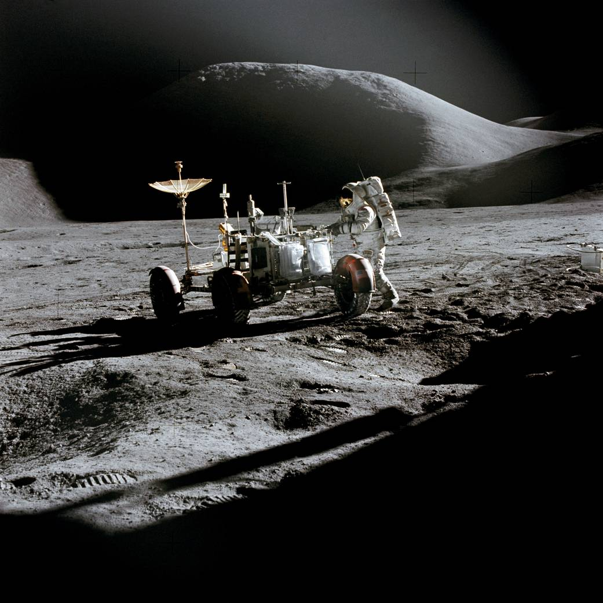

Lunar Roving Vehicle (LRV)
- Mission type
- Lunar Surface Exploration
- Location
- The Moon (first used at Hadley–Apennine, Apollo 15)
- Launch / deployment
- July 31, 1971 (first deployment, Apollo 15)
- Mission duration
- Used for a few days of surface exploration on each of Apollo 15, 16 and 17
- Current status
- Mission completed; all three rovers remain parked on the lunar surface.
The Lunar Roving Vehicle, or “Moon buggy,” was a battery-powered electric car used on Apollo 15, 16 and 17. It folded up to fit on the Lunar Module and let astronauts explore far beyond walking distance. With it, crews could carry tools, cameras and Moon rock samples across the surface and study places that would have been too far to reach on foot.
Scientific achievements
- Let astronauts explore much farther from the lander than they could on foot.
- Helped crews collect and carry geological samples from several different areas.
- On Apollo 17, it drove 35.9 km, the longest drive of the program.
Did you know? During Apollo 17, a rover fender broke off, and the astronauts repaired it with duct tape and lunar maps.
Read the NASA mission page
Listen to the story